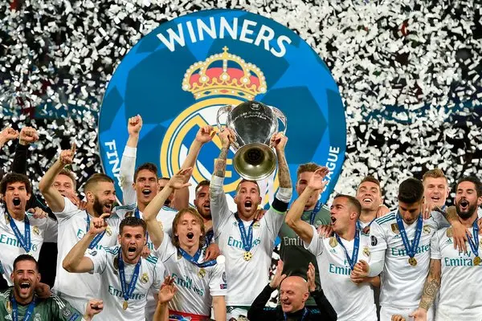

History of Real Madrid
Real Madrid was founded on March 6, 1902 in Madrid, Spain. The club is considered as the most successful and decorated in European fotball history. Real madrid have won the 35 Spanish league titles and 14 UEFA champions league titles which is the most by any team in European football. Some of the most decorated players in football history have played for real madrid, players like Alfredo Di Stefano who has won "Super Ballon d'Or, and Cristiano Ronaldo winner of 5 times Ballon d'Or have contributed in making Real Madrid win the club of the Century award."
